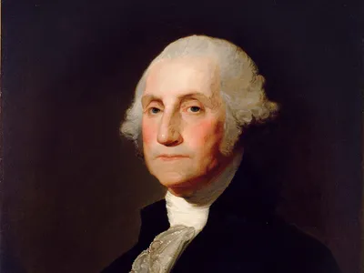
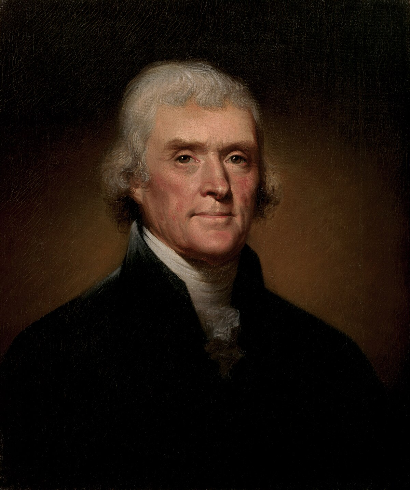
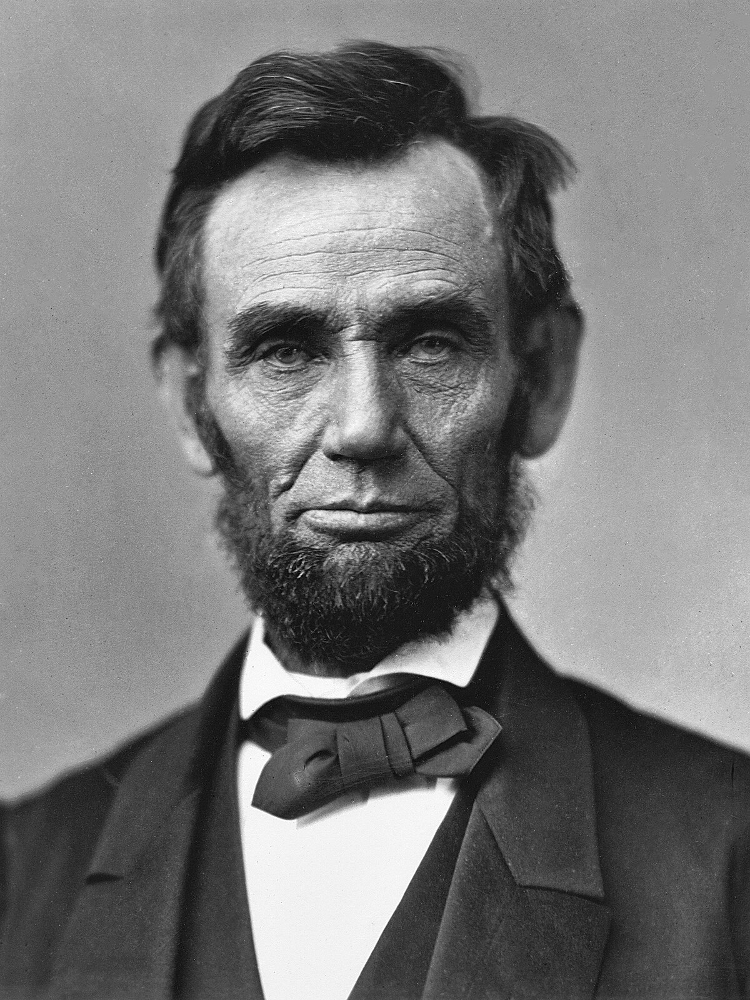

George Washington
George Washington was the first President of the United States and a key leader during the American Revolutionary War. He led the Continental Army to victory against Britain, helping secure American independence. Washington also Presided over the Constitutional Convention in 1787. As president, he set many traditions, including the two-term limit.He is often called the "Father of His country" for his vital role in founding the nation.

Thomas Jefferson
Thomas Jefferson was the third President of the United States and the main author of the Declaration of Independence. He helped shape the early American republic with his ideas on liberty and democracy. Jefferson also made the Louisiana Purchase in 1803, doublin the size of the country. He supported education and founded the University of Virginia. His leadership and vision helped lay the foundation for American democracy.

Theodore Rossevelt
Theodore Roosevelt was the 26th President of the United States and a strong leader known for his energy and reforms. He fought for the rights of workers, broke up powerful business monopolies, and protected natural resources by creating national parks. Rossevelt led the construction of the Panama Canal, boosting global trade. He was also the youngest president in U.S. history at age 42. His bold actions helped shape the modern presidency.

Abraham Lincoln
Abraham Lincoln was the 16th President of the United States and is best known for leading the country during the Civil War. He worked to end slavery and issued the Emancipation Proclamation in 1863. Lincoln promoted national unity and preserved the Union. He gave powerful speeches like the Gettysburg Address that inspired hope and equality. His leadership left a lasting impact on American freesom and democracy. Lincoln was assassinated in 1865.